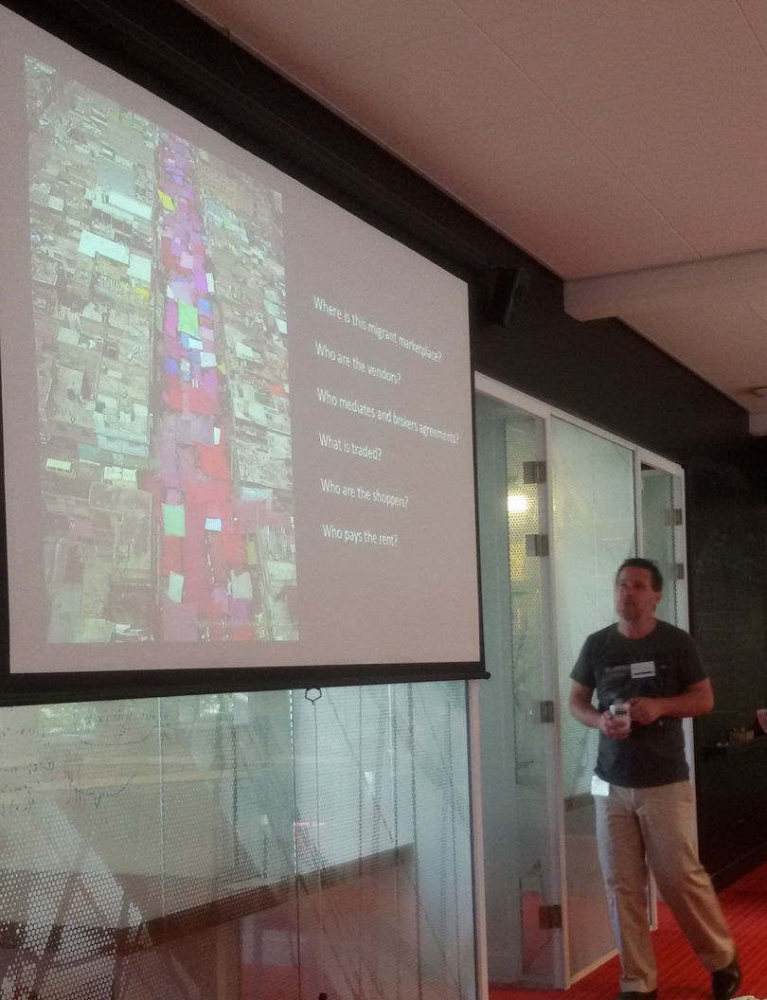

Spannend ‘niet-congres’ brengt nieuwe samenwerking tussen erfgoedsector, academici en ict-ers op gang
Verslag Migrant (R)e-collections, 22-26 augustus 2016
Emigranten uit Nederland hebben zich in de eeuwen verspreid over de hele wereld, stichtten gemeenschappen of gingen makkelijk op in de bevolking, maar bleven zich verbonden voelen en identificeren met (elementen) uit de Nederlandse cultuur. Bij elke generatiewisseling moeten achterblijvers beslissen wat er met de memorabilia uit een migratieverleden gedaan moet worden. Waar kunnen ze terecht met hun dagboeken, gezangenbundels, wafelijzers en recepten in een vaak onleesbaar geworden taal? Op geïsoleerde plekken, bijv. in Brazilië, functioneren verhalen, gewoontes en voorwerpen nog steeds als markeerders van de Nederlandse immigrantenidentiteit. Maar wie beheert en ontsluit deze materialen?
Onderzoekers zijn juist op zoek naar deze getuigen en verhalen omdat ze de binnenkant van het migratieproces tonen, waar zij vaak alleen de buitenkant te zien krijgen uit overheidsarchieven. Maar hoe komen ze aan die verhalen die de overheersende en gestandaardiseerde voorstellingen kunnen corrigeren? En aan welke eisen moeten databestanden voldoen om verschillende soorten gegevens over passagierslijsten, medische staten, financiën tot fotoboeken, brieven en keukenvoorwerpen met elkaar in verband te brengen? Wat moeten data-ontwerpers weten om inhoudelijke vragen in queries om te zetten?
Dertig deelnemers verdeeld over deze drie domeinen uit Nederland, Australië, Engeland, België en de VS, bogen zich een week lang over de vraag of ze met elkaar een virtuele erfgoedcollectie voor migratie kunnen opzetten als verzamelpunt voor verspreide en gevarieerde verzamelingen van voorwerpen en verhalen, die duurzaam is en door een verscheidenheid aan vragenstellers gebruikt kan worden. Het Huygens ING en Centre for Global Heritage and Development waren de initiatiefnemers van dit congres waarvoor het Lorentz Center in Leiden een optimale omgeving schiep voor een ongestoorde uitwisseling van ideeën en voorstellen.

Er was wel wat omdenken voor nodig om resultaten te boeken. Historici moesten van erfgoedvertegenwoordigers leren dat ze niet over hen, maar met hen over de functie van de collecties moeten praten, en soms hun schroom overwinnen om met datadeskundigen te overleggen ook al doorgronden ze de software niet. De dataspecialisten beseften dat vroegtijdig overleg met onderzoekers en beheerders van collecties nodig is om goede instrumenten te kunnen bouwen. Mensen die actief zijn met overzees erfgoed moeten materiaal uit handen durven geven. Iedereen moest dus stappen zetten buiten de veiligheid van het eigen domein.
Na een intensieve en informatieve kennismakingsronde en korte lezingen en activiteiten om de behoeften, trends, concepten, uitleg van werkwijzen, technische vereisten en procesbeschrijvingen bloot te leggen, kon er aan de opdracht gewerkt worden om stappen te formuleren voor een project waarin alle drie de belangen gediend en verankerd worden. De crux lag niet in het kiezen van de techniek of het vinden van collecties, maar in het opbouwen van wederzijds vertrouwen. De groep moest de verleiding weerstaan om een nieuwe website te lanceren, een organisatie op te richten of een bestaande club te overtuigen dat zij deze taken moeten opnemen. Dit ontsloeg hen niet van de verantwoordelijkheid om goed na te denken over eigendom, privacy, toegankelijkheid, vindbaarheid, financiering en productie, maar deze issues verlammen de voortgang niet meer.
De metafoor die de deelnemers verenigde in hun gemeenschappelijke doelen was die van een bazaar, een marktplaats waar aanbod en vraag over cultureel erfgoed overzee bij elkaar komen in heel verschillende producten. Sommigen brengen waren aan, anderen nemen ze af en soms zijn de rollen omgekeerd. Een te benoemen marktmeester bepaalt de minimale spelregels en de kosten zijn minimaal. Vervolgstappen worden voorbereid om gezamenlijk met de drie expertisegebieden onderzoeksvragen te bedenken, die kunnen fungeren als pilot voor een werkmodel dat toepasbaar is voor soortgelijke erfgoedgroepen. Met groot vertrouwen in elkaar kan deze weg worden ingeslagen.
Hans Krabbendam